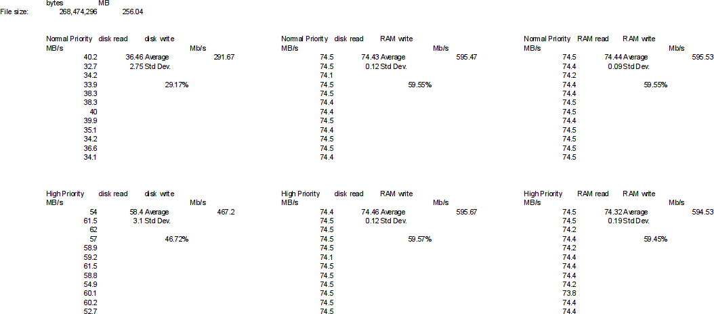

OCILab Network
The network performance of the test environment was tested to determine the maximum sustainable bandwidth that can be used in this test environment. In order to determine this we used an ftp server on one host and used the
wget command as a client to transfer data between hosts using the
ftp protocol. Measurements were taken of the rate at which a 256MB file was transferred between the hosts. Conditions that were varied included the processing priority and whether the data was read and written from and to disk or RAM.
Process priority was controlled by either normal server and client execution or by starting both server and client with a 'nice' value of -10. At this level, only one system process had a higher priority. Reading and writing from and to disk was simply done by transferring the file between regular file systems. Reading and writing from and to RAM was done by creating a
tmpfs filesystem in RAM and using that to store the file on both ends of the transfer.
The following table summarizes the results. The clearly dominant factor was the write speed to disk. When data was written to RAM, the network appears to be the limiting factor. The maximum transfer rate of the network for this equipment configuration appears to be 596 Mb/s or just under 60% of the theoretical 1 Gb/s.
Network Throughput | Priority | Read From | Write To | Throughput |
| Normal | Disk | Disk | 292 Mbps |
| RAM | 595 Mbps |
| RAM | 595 Mbps |
| High | Disk | Disk | 467 Mbps |
| RAM | 596 Mbps |
| RAM | 595 Mbps |
The detailed data collected appears below.

$Id: ocilab_network.html 52 2010-01-30 00:00:25Z martinezm $